OpenClaw (Clawdbot) チュートリアル
OpenClaw（旧称 Clawdbot、移行名 Moltbot）は、2026年1月に突然流行したオープンソースの個人用AIアシスタントプロジェクトであり、Peter Steinberger（PSPDFKit 創業者）によって開発されました。
OpenClaw はタスクを実行できるエージェントです。私たちが指示を与えると、それに答えるだけでなく、自ら OS を操作し、Web ページにアクセスし、メールを処理し、ファイルを整理し、リマインダーを設定し、さらにはコードを自動的に作成することもできます。
OpenClaw は、ローカル計算能力 + 大規模モデル Agent 自動化を極限まで追求した開発者向け効率化ツールです。
OpenClaw の目標は、AI にアドバイスを与えるだけでなく、完全なエンジニアリングタスクを直接完了させることです。
Anthropic が1月27日に「Clawd / Clawdbot は Claude と似すぎている」という内容の弁護士書簡を送ったため、プロジェクトは当日緊急に Moltbot（脱皮したロブスターの意味、マスコットはザリガニの Molty 🦞）に改名されましたが、機能は完全に同じで、旧コマンド clawdbot は引き続き互換性があります。
Moltbot はプロジェクトチームが権利侵害リスクに対応するために考え出した移行用の名前であり、OpenClaw が現在の最終的な公式名称です。
-
OpenClaw 公式サイト：https://openclaw.ai/
中国語ドキュメント：https://docs.openclaw.ai/zh-CN
-
GitHub アドレス：https://github.com/openclaw/openclaw
OpenClaw スキルコレクション：https://github.com/VoltAgent/awesome-openclaw-skills
Clawbot、Moltbot、OpenClaw は実は同じオープンソースプロジェクトであり、名前の変遷順序は次のとおりです。
Clawdbot → Moltbot → OpenClaw
| 名称 | 時期 | 背景/理由 | 本質的な関係 |
|---|---|---|---|
| Clawdbot / Clawbot | 2025年末から2026年1月初旬 | 最初のプロジェクト名。インスピレーションはClaude 和 claw（ロブスターの爪）ネタ | 元の名称であり、最初に GitHub に登場したアイデンティティ |
| Moltbot | 2026年1月27日 | Anthropic の商標上の懸念により改名を要求された | 中間的な移行名。機能、コードは Clawdbot と同一 |
| OpenClaw | 2026年1月30日以降 | 著作権の衝突を捨て、オープンソース性/長期的なブランドを強調 | 現在の公式名称であり、今後はドキュメント、リポジトリなどの統一識別子 |
インストール方法
OpenClaw のインストールは非常に親しみやすく設計されており、開発者でなくてもすぐに使い始められます。
システム要件（必ずしも Mac mini ではありません）：
- ハードウェア：非常に低く、2GB RAM で動作します。
- 環境：Mac、Windows、Linux に対応。Node.js (pnpm) のインストールが必要、または Docker を使用します。
1、推奨インストール方法（ワンクリックスクリプト）：
ターミナルから直接、以下のコマンドを実行します。
macOS/Linux の場合：
curl -fsSL https://openclaw.ai/install.sh | bash
Windows の場合：
#PowerShell iwr -useb https://openclaw.ai/install.ps1 | iex #CMD curl -fsSL https://openclaw.ai/install.cmd -o install.cmd && install.cmd && del install.cmd
これにより Node.js（≥22）が自動的にインストールされ、基本設定が完了します。
2、手動インストール
必要ですNode.js ≥22基本設定を完了します：
npm を使用：
npm i -g openclaw # 如果速度慢可以指定国内镜像 npm i -g openclaw --registry=https://registry.npmmirror.com
または pnpm を使用：
pnpm add -g openclaw
インストール完了後、初期化してバックグラウンドサービス（launchd / systemd ユーザーサービス）をインストールします：
openclaw onboard
3、ソースコードからのインストール（開発モード）
git clone https://github.com/openclaw/openclaw.git cd openclaw pnpm install pnpm ui:build # 首次运行会自动安装 UI 相关依赖并构建前端界面 pnpm build # 构建整个项目（包含后端与相关模块） # 初始化 OpenClaw 并安装为系统后台服务（开机自动运行） pnpm openclaw onboard --install-daemon # 开发模式：监听 TypeScript 代码变更并自动重载网关服务 pnpm gateway:watch
設定について
ワンクリックスクリプトでのインストールを推奨します。
macOS/Linux の場合：
curl -fsSL https://openclaw.ai/install.sh | bash
Windows の場合：
#PowerShell iwr -useb https://openclaw.ai/install.ps1 | iex #CMD curl -fsSL https://openclaw.ai/install.cmd -o install.cmd && install.cmd && del install.cmd
環境検出を行い、必要な依存関係をインストールし、オンボーディング（セットアップウィザード）フローを開始します。
後でセットアップウィザードに再度入るには、以下のコマンドを実行します：
openclaw onboard --install-daemon
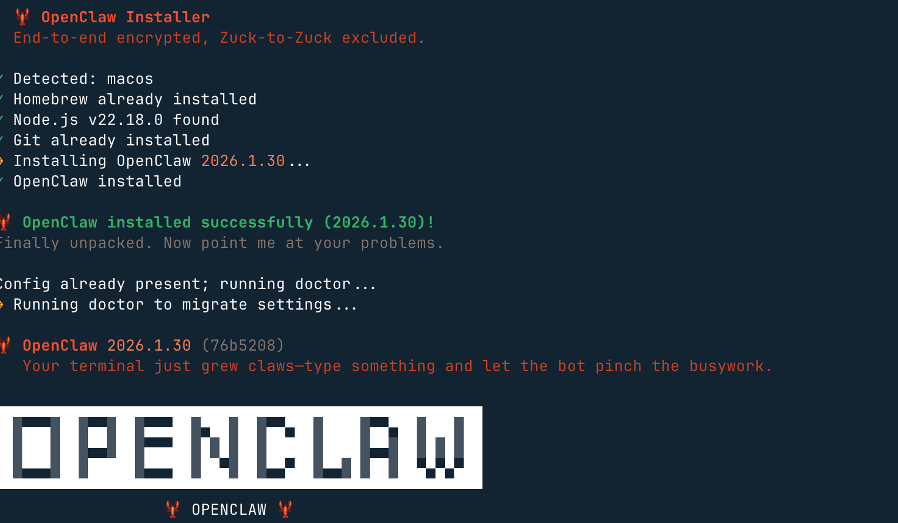
その後、このロブスターは能力が非常に強いが、もちろんリスクも大きいと警告されます。「はい」を選択しますyes（「いいえ」ならインストールされません）でOKです：
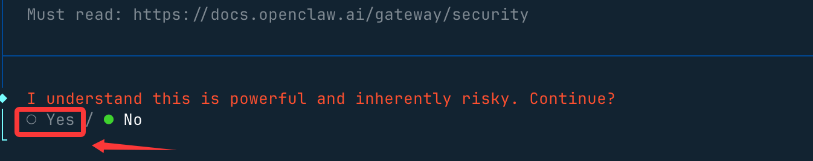
次に「クイックスタート」を選択しますQuickStartオプション：
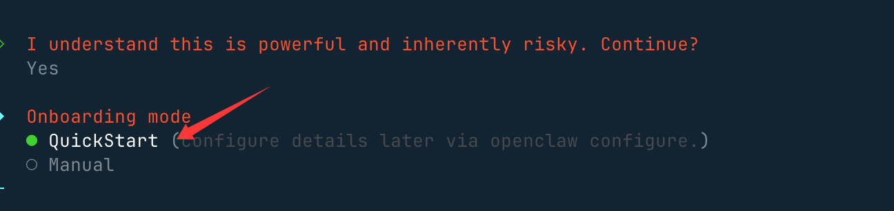
次に大規模モデルを設定する必要があります。Model/Auth Provider で AI プロバイダーを選択します。国内外のプロバイダーはほぼすべて対応しています。
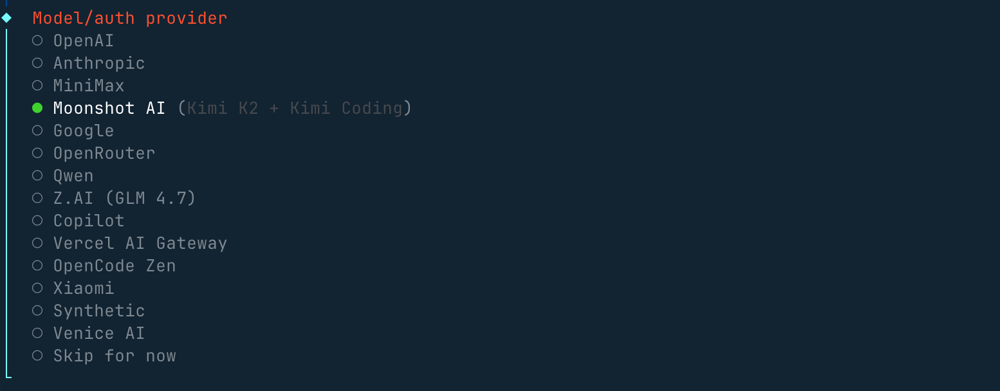
海外のアカウントがない場合は、中国国内の Qwen、MiniMax、Zhipu（智谱）の API キーを設定しても構いません。認証設定ファイル（OAuth + API キー）は~/.openclaw/agents/<agentId>/agent/auth-profiles.jsonにあり、後でこのファイル上で変更することもできます。
次にチャットツールを選択するオプションが表示されます。海外のものは通常ないので、最後の1つを選択できます：
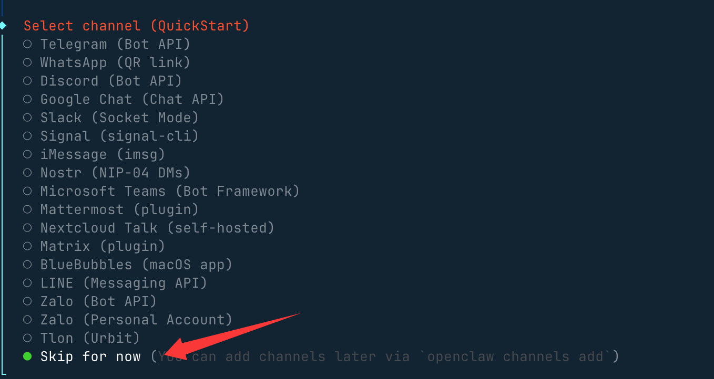
その他の設定、例えばポートの設定はGateway Portデフォルトの 18789 のままでOKです。たとえば Skills やパッケージのインストールマネージャーは npm などを選択し、そのまま Yes を押し続けて問題ありません。
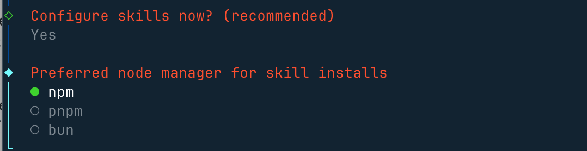
好きなスキルをいくつか選択するか、そのままスキップしても構いません。使用するのはスペースキーで選択します：
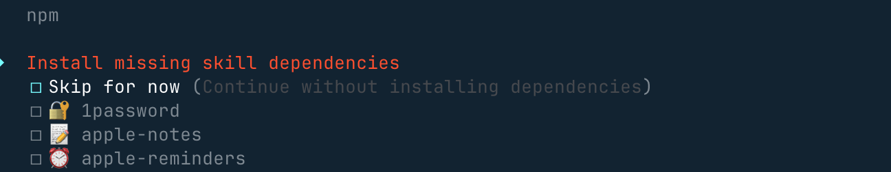
これらの API キーは、ないものはそのままスキップを選択しますno：
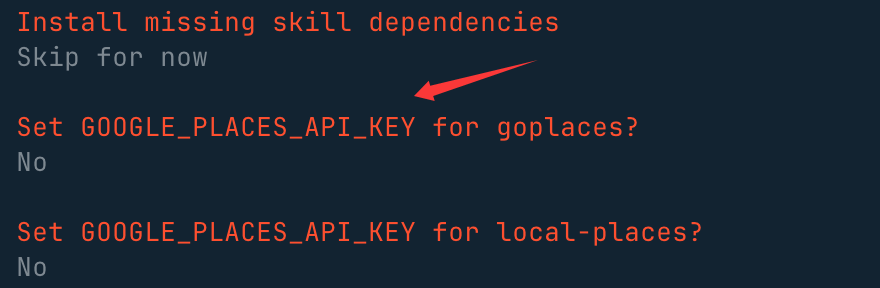
最後にこれら3つのフックは有効にできます。使用するのはスペースキーで選択します。主にコンテンツガイドログとセッション記録を行います：
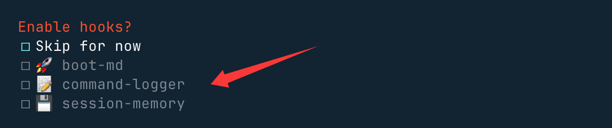
「Open the Web UI」を選択し、ブラウザで開きます：
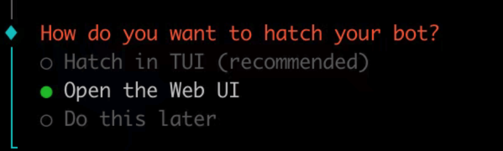
インストール完了後、自動的にアクセスしますhttp://127.0.0.1:18789/chat、チャットインターフェースを開いて作業を開始させることができます。
たとえば、最新のテクノロジーニュースを検索するなど：
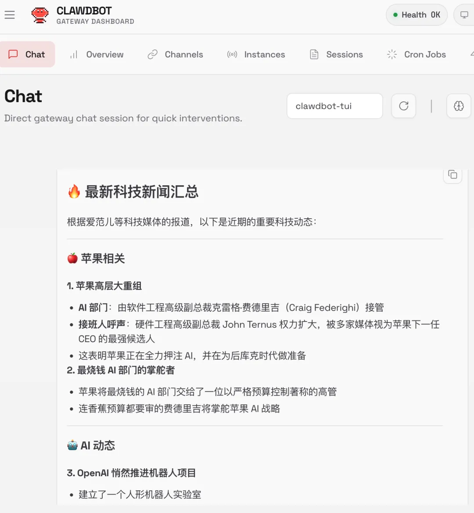
起動後、以下のコマンドを使用できますopenclaw statusコマンドでステータスを確認できます：
openclaw status
初心者ガイド中にサービスをインストールした場合、Gateway ゲートウェイはすでに実行されているはずです：
openclaw gateway status
手動実行（フォアグラウンド）：
openclaw gateway --port 18789 --verbose
インストール後に実行できるコマンド：
- 初心者ガイドを実行：
openclaw onboard --install-daemon - クイックチェック：
openclaw doctor - Gateway ゲートウェイのヘルスステータスを確認：
openclaw status+openclaw health - ダッシュボードを開く：
openclaw dashboard
アンインストール
内蔵アンインストーラーを使用：
openclaw uninstall
非対話式（自動化 / npx）：
openclaw uninstall --all --yes --non-interactive npx -y openclaw uninstall --all --yes --non-interactive
スキルの使用
スキルは SKILL.md ファイルを含む独立したフォルダーです。OpenClaw エージェントに新しい機能を追加したい場合、ClawHub はスキルを検索・インストールするための最適な選択肢です。
ClawHub スキルリポジトリのアドレス：https://clawhub.ai/
ClawHub 国内ミラー：https://skillhub.tencent.com/
ClawHub ツールをインストール：
# 推荐方式（npx 无需全局安装） npx clawhub@latest --version # 或全局安装（方便以后直接用 clawhub 命令） npm install -g clawhub # 或者用 pnpm pnpm add -g clawhub
ログイン：
clawhub login
スキルを検索：
clawhub search "postgres backups"
新しいスキルをダウンロードしてインストール：
clawhub install my-skill-pack
インストール済みスキルを一括更新：
clawhub update --all
プラグイン管理
プラグインは軽量なコードモジュールであり、新しいコマンド、ツール、および Gateway RPC 機能を追加することで、OpenClaw に追加の機能を拡張できます。
読み込み済みプラグインを表示：
openclaw plugins list
公式プラグインをインストール（例：音声通話プラグイン）：
openclaw plugins install @openclaw/voice-call
プラグインはインストール後にゲートウェイを再起動すると有効になります：
openclaw gateway restart
よく使うコマンド
OpenClaw よく使うコマンド一覧表：
| 分類 | コマンド | 説明 |
|---|---|---|
| 初期化とインストール | openclaw onboard |
対話式ウィザード（モデル、チャネル、ゲートウェイ、ワークスペースを設定） |
| 初期化とインストール | openclaw setup |
初期化設定 + ワークスペース（非対話版） |
| 初期化とインストール | openclaw configure |
対話式設定ウィザード（モデル、チャネル、スキル） |
| ゲートウェイ管理 | openclaw gateway status |
ゲートウェイサービスのステータス確認 + RPC 疎通確認 |
| ゲートウェイ管理 | openclaw gateway start |
ゲートウェイサービスを起動 |
| ゲートウェイ管理 | openclaw gateway stop |
ゲートウェイサービスを停止 |
| ゲートウェイ管理 | openclaw gateway restart |
ゲートウェイサービスを再起動 |
| ゲートウェイ管理 | openclaw gateway run |
ゲートウェイをフォアグラウンドで直接実行（デバッグ用） |
| ゲートウェイ管理 | openclaw gateway health |
ゲートウェイのヘルス情報を取得 |
| 設定管理 | openclaw config file |
現在の設定ファイルの完全パスを表示 |
| 設定管理 | openclaw config get <path> |
設定項目を読み取る |
| 設定管理 | openclaw config set <path> <value> |
設定項目を変更 |
| 設定管理 | openclaw config validate |
設定ファイルが正当かどうかを検証 |
| 診断とステータス | openclaw doctor |
ワンクリックヘルスチェック + 自動修復 |
| 診断とステータス | openclaw status |
セッションの健全性ステータスと最近の連絡先を表示 |
| 診断とステータス | openclaw health |
実行中のゲートウェイからヘルスデータを取得 |
| 診断とステータス | openclaw logs |
ゲートウェイのログをリアルタイムで表示 |
| その他の高頻度操作 | openclaw dashboard |
Webコントロールパネルを開く |
| その他の高頻度操作 | openclaw channels status |
接続済みのチャットチャネルを表示 |
| その他の高頻度操作 | openclaw agent run |
エージェントの実行を手動でトリガー |
設定を変更したら実行するのを忘れずにopenclaw gateway restart変更を反映させよう～ 🦞
チャネル管理
- WhatsApp：
openclaw channels login（またはQRスキャン） - Telegram：
openclaw channels add --channel telegram（Bot Tokenが必要） - Discord：
openclaw channels add --channel discord（Bot Tokenが必要） - iMessage：macOSネイティブブリッジ
- Slack：
openclaw channels add --channel slack（Bot Tokenが必要）
ワークスペース構造（Workspace Anatomy）
AGENTS.md：指示の説明USER.md：環境設定MEMORY.md：長期記憶HEARTBEAT.md：チェックリストSOUL.md：人格/トーンIDENTITY.md：名前/テーマBOOT.md：起動設定- ルートディレクトリ：
~/.openclaw/workspace
チャット内スラッシュコマンド
/status：ヘルス + コンテキスト/context list：コンテキスト貢献者/model <m>：モデル切り替え/compact：ウィンドウスペースを解放/new：新しいセッション/stop：現在の実行を中止/tts on|off：音声切り替え/think：推論モード切り替え
主要パスマップ（Essential Path Map）
- メイン設定：
~/.openclaw/openclaw.json - デフォルトワークスペース：
~/.openclaw/workspace/ - エージェント状態ディレクトリ：
~/.openclaw/agents/<cid>/ - OAuth & APIキー：~/.openclaw/agents/<agentId>/agent/auth-profiles.json、古いバージョンの場合は
~/.openclaw/credentials/ - ベクトルインデックスストレージ：
~/.openclaw/memory/<cid>.sqlite - グローバル共有スキル：
~/.openclaw/skills/ - ゲートウェイファイルログ：
/tmp/openclaw/*.log
音声と TTS
- 有料：OpenAI / ElevenLabs
- 無料：Edge TTS（API Key不要）
- 自動TTS：
messages.tts.auto: "always"
メモリとモデル
- ベクトル検索：
memory search "X" - モデル切り替え：
models set <model> - 認証設定：
models auth setup - ログ：
memory/YYYY-MM-DD.md
Hooks とスキル
- ClawHub：
clawhub install <slug> - Hookリスト：
openclaw hooks list
トラブルシューティング
- DM返信がない → ペアリングリスト → 承認
- グループでミュート → メンションパターン設定を確認
- 認証期限切れ →
models auth setup-token - ゲートウェイ停止 →
doctor --deep - メモリのバグ → メモリインデックスを再構築
自動化と研究
- ブラウザ：
browser start/screenshot - サブエージェント：
/subagents list/info - 定期タスク：
cron list/run <cid> - ハートビート：
heartbeat.every: "30m"
サードパーティクラウドによる直接インストールと設定
現在、各主要プラットフォームがこのエージェントをサポートしています。ローカルにインストールしたくない場合は、ワンクリックでクラウド上のOpenClawをデプロイできます：
- Alibaba Cloud（阿里云）：https://www.aliyun.com/activity/ecs/clawdbot
- Tencent Cloud（腾讯云）：https://cloud.tencent.com/developer/article/2624973
阿里云の軽量サーバーでインストール：https://www.aliyun.com/activity/ecs/clawdbot。
それらのイメージを使用してワンクリックインストール可能：
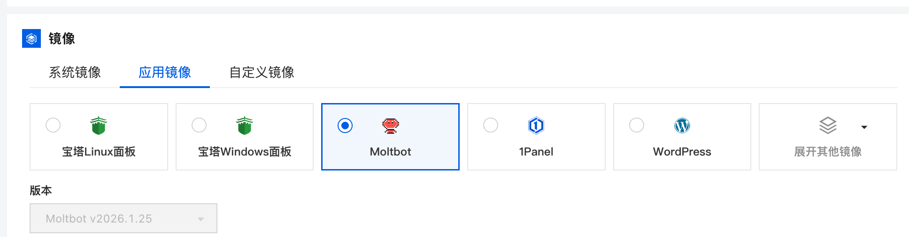
腾讯云の軽量サーバーでインストール：https://cloud.tencent.com/developer/article/2624973
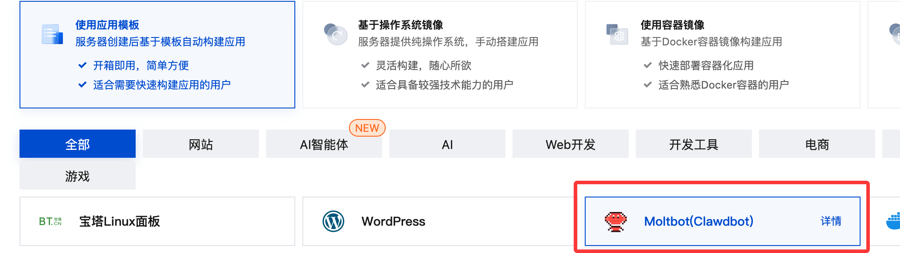
よく使うコマンド
OpenClawのよく使うコマンドは以下のとおりです：
| コマンド | 機能 | 備考 / パラメータ |
|---|---|---|
openclaw status |
Gatewayの現在の実行状態を表示 | 健全性とコンテキスト情報を含む |
openclaw health |
ヘルスチェック | core、依存関係、実行環境を検出 |
openclaw doctor |
総合診断と修復の提案 | サポート--deep詳細チェック |
openclaw onboard |
対話式初期化ウィザード | 初回使用時におすすめ |
openclaw onboard --install-daemon |
システムデーモンをインストール | Gatewayをバックグラウンドで常駐実行 |
openclaw onboard --uninstall-daemon |
デーモンをアンインストール | データを削除しない |
openclaw configure |
対話式設定ウィザード | モデル、チャネル、認証情報など |
openclaw config get <path> |
設定値を取得 | JSON Path |
openclaw config set <path> <value> |
設定項目を設定 | JSON5 / rawテキストをサポート |
openclaw config unset <path> |
設定項目をクリア | 単一のキー値を削除 |
openclaw channels list |
ログイン済みチャネルを一覧表示 | WhatsApp / Telegram / Discord など |
openclaw channels login |
新しいチャネルアカウントにログイン | QRコードスキャンまたは認可フロー |
openclaw channels add |
チャネルを追加 | Telegram / Discord / Slack |
openclaw channels status --probe |
チャネルのヘルスチェック | 接続の到達可能性を検出 |
openclaw skills list |
スキルを一覧表示 | インストール済み / 利用可能なスキル |
openclaw skills info <skill> |
スキル詳細 | パラメータ、バージョン情報 |
clawhub install <slug> |
ClawHubからスキルをインストール | 公式スキルマーケット |
openclaw hooks list |
Hookリストを一覧表示 | イベントフック機構 |
openclaw plugins list |
プラグインを一覧表示 | インストール済みプラグインを表示 |
openclaw plugins install <id> |
プラグインをインストール | 例：@openclaw/voice-call |
openclaw plugins enable <id> |
プラグインを有効化 | 通常はGatewayの再起動が必要 |
openclaw models list |
利用可能なモデルを一覧表示 | 認証状態を含む |
openclaw models status |
モデルのステータス | 現在の利用可能性 |
openclaw models auth setup-token |
モデル認証設定 | Cheatsheet推奨方法 |
openclaw memory search "X" |
長期記憶を検索 | ベクトル検索 |
openclaw memory index |
メモリインデックスを再構築 | memoryの異常を修復 |
openclaw logs |
ログを表示 | デフォルトで集約出力 |
openclaw logs --follow |
リアルタイムログ | --json / --plain / --limit |
openclaw gateway install |
Gatewayシステムサービスをインストール | システムデーモンとして登録 |
openclaw gateway start |
Gatewayサービスを起動 | system serviceモード |
openclaw gateway stop |
Gatewayサービスを停止 | |
openclaw gateway restart |
Gatewayサービスを再起動 | 設定変更後に使用 |
openclaw gateway status |
Gatewayシステムサービスのステータス | とは異なるopenclaw status |
openclaw browser start |
ブラウザエージェントを起動 | Automation機能 |
openclaw browser screenshot |
Webページのスクリーンショット | |
openclaw subagents list |
サブエージェントを一覧表示 | |
openclaw cron list |
定期タスクを一覧表示 | |
openclaw cron run <id> |
定期タスクを実行 | |
openclaw uninstall |
Gatewayサービスとデータをアンインストール | 公式推奨 |
openclaw uninstall --all --yes --non-interactive |
全自動アンインストール | 状態 / workspace / プラグイン |
openclaw uninstall --state |
状態ファイルを削除 | workspaceを削除しない |
openclaw uninstall --workspace |
ワークスペースを削除 | agent / workspaceデータ |
openclaw uninstall --service |
システムサービスのみアンインストール | データを削除しない |
openclaw uninstall --dry-run |
アンインストールをシミュレーション | 結果のみ表示 |
なぜ最近こんなに人気なのか？
- まさに「JARVISのように」を実現：ファイルの読み書き、ターミナルコマンドの実行、ブラウザ操作、メールの送受信、カレンダー、コーディング、航空券の予約、受信トレイのクリア……
- ローカル優先 + 長期記憶：すべての会話がプラットフォームを越えてコンテキストを共有し、USER.md と memory/ ディレクトリは使うほど賢くなる
- ほぼすべての主要モデルをサポート：Claude、Gemini、OpenAI、Ollamaローカルモデル、Pi など
- コミュニティスキルエコシステムの爆発的成長：ClawdHubには500以上のコミュニティスキルがあります（Slack、Discord、GitHub、ブラウザ制御、macOS UI自動化……）
- インストールは npm install のように簡単、実際の能力はかなり spicy（開発者原言）
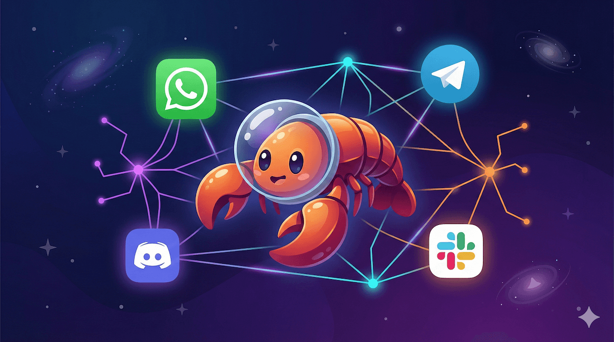
そのコア能力は以下の通り：
- 自然言語の目標を実行可能なステップに分解する
- ターミナルコマンドを自動的に呼び出す
- プロジェクトファイルの作成と修正
- コードを実行し、結果を検証する
- エラー内容に基づいて自動修正する
Claude Code/OpenCode のようなコード補完ツールと比べ、OpenClaw は実行権限を持つエンジニアリング型エージェントに近い。
- Claude Code と OpenCode 等はコード品質と理解に強い
- OpenClaw はエンジニアリングプロセス全体の自動完了に強い
| 能力次元 | OpenClaw | Claude Code | OpenCode |
|---|---|---|---|
| タスク計画 | 强 | 中 | 中 |
| 自動実行 | 完全 | 部分的 | 部分的 |
| 自己修復 | 有 | 无 | 无 |
| エンジニアリングレベルの操作 | 强 | 强 | 中 |
| ローカル自動化 | ネイティブサポート | 弱い | 弱い |